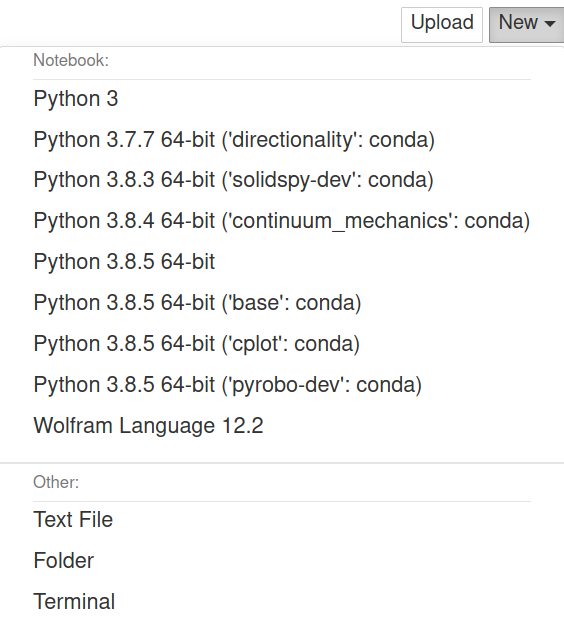
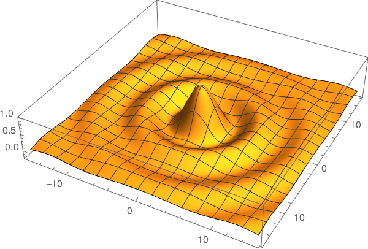

Using Wolfram Language in Jupyter: A free alternative to Mathematica
In this post I am going to describe how to add the Wolfram Language to the Jupyter notebook. This provides a free alternative to Mathematica with, pretty much, the same syntax. The use of the Wolfram Engine is free for non-production as described in their website:
The Free Wolfram Engine for Developers is available for non-production software development.
You can use this product to:
develop a product for yourself or your company
conduct personal projects at home, at school, at work
explore the Wolfram Language for future production projects
Installation
To install you should do the following steps:
Create a Wolfram account, if you don't have one.
Execute the installer.
Type the following in a terminal
and you should be asked for your email and password.
After that you should be in a terminal and see the following
Wolfram Engine activated. See https://www.wolfram.com/wolframscript/ for more information. Wolfram Language 12.2.0 Engine for Linux x86 (64-bit) Copyright 1988-2021 Wolfram Research, Inc.
And we can try that it is working
In[1]:= $Version Out[1]= 12.2.0 for Linux x86 (64-bit) (January 7, 2021) In[2]:= Integrate[1/(1 + x^2), x] Out[2]= ArcTan[x]
Now we need to install WolframLanguageForJupyter. For that we can type the following in a terminal
git clone https://github.com/WolframResearch/WolframLanguageForJupyter.git cd WolframLanguageForJupyter/ ./configure-jupyter.wls add
To test that it is installed we can type the following in a terminal
and it should have an output that includes a line similar to the following
Or we could also try with
and see the following in the kernel menu.

Test drive
I tested some of the capabilities and you can download the notebook or see a static version here.
Let's compute the integral
And make a 3D plot.
fun:= Sin[Sqrt[x^2 + y^2]]/Sqrt[x^2 + y^2] Plot3D[fun, {x, -5*Pi, 5*Pi}, {y, -5*Pi, 5*Pi}, PlotPoints -> 100, BoxRatios -> {1, 1, 0.2}, PlotRange -> All]

In this case we don't have an interactive image. This is still not implemented, but if you are interested there is an open issue about it in GitHub.
Comments
Comments powered by Disqus